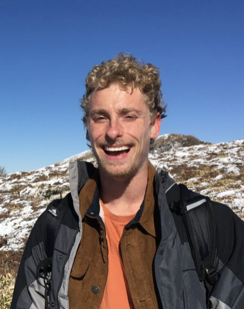

Tommy Alford

Research
The Telescope on the Mountain High
Up in the desert, so dry and so wide,
Sat a telescope, gazing with cosmic pride.
It looked at the sky, and the sky looked back,
With a faint little glow and a faint little crack
Of light from the dawn of the whole universe,
Which is old, and is vast, and is hard to rehearse.
The Wobbly, Wobbly Passband
Now a passband, you see, is the range of the light
That a detector can see, from the dim to the bright.
But if you don't know it, you'll get it all wrong,
And your cosmos will wobble the whole night long!
So we measured it once, and we measured it twice,
With a spectrometer, tidy and precise.
What We Found, Said the Scientist
We found that the sky had a story to tell,
Of a bang, and a stretch, and of how it all fell
Into clumps, into clusters, into galaxies grand,
Spread out like the grains on a wide beach of sand.
And if you should ask, "Is it finished?" We'd say,
"Oh, no! There is much more to learn, any day!"
Publications
Selected publications
Papers with major contributions. The contribution is noted under each entry.
- The Atacama Cosmology Telescope: Passband Measurements with an Analysis of Systematic Errors Submitted to Applied Optics (2026) [arXiv] [PDF] Led the analysis; identified and corrected FTS systematic errors, providing calibrated passbands and uncertainties for ACT DR6.
- The Simons Observatory: Commissioning of the Mid-Frequency Small Aperture Telescopes Preprint (2026) [arXiv] [PDF] Led the initial planet beam-mapping and calibration campaign for the first 90/150 GHz SAT; provided the passband measurements used in the analysis.
- Simons Observatory: Predeployment Performance of a Large Aperture Telescope Optics Tube in the 90 and 150 GHz Spectral Bands ApJS 276, 31 (2025) Led FTS spectral characterization, measured optical crosstalk, and characterized detector noise stability.
- Laboratory Beam Characterization for the First Small Aperture Telescope Proc. SPIE 13094 (2024) Led holography beam measurements, constraining the near- and far-field beam size, ellipticity, and sidelobe amplitude.
- The Simons Observatory: Design, Integration, and Testing of the Small Aperture Telescopes ApJS (2024) Led holography beam measurements for the first SAT; built the FTS and developed its spectral-measurement software.
- Simons Observatory: Characterizing the Large Aperture Telescope Receiver with Radio Holography Applied Optics (2022) Contributed to beam measurement analysis software for radio holography characterization of the LAT receiver.
Collaboration publications
Papers from ACT and the Simons Observatory. For the ACT papers, contributions were detector passband calibration and uncertainty characterization supporting mapmaking, component separation, foreground modeling, and cosmological analysis.
- The Simons Observatory: Forecasted Constraints on Primordial Gravitational Waves with the Expanded Array of Small Aperture Telescopes JCAP (2026)
- The Atacama Cosmology Telescope: DR6 Maps JCAP (2025)
- The Atacama Cosmology Telescope: DR6 Power Spectra, Likelihoods, and ΛCDM Parameters JCAP (2025)
- The Atacama Cosmology Telescope: DR6 Constraints on Extended Cosmological Models JCAP (2025)
- The Simons Observatory: Science Goals and Forecasts for the Enhanced Large Aperture Telescope JCAP (2025)
- Atacama Cosmology Telescope: High-resolution Component-separated Maps across One Third of the Sky Phys. Rev. D 109, 063530 (2024)
- The Atacama Cosmology Telescope: DR6 Gravitational Lensing Map and Cosmological Parameters ApJ (2024)
- The Atacama Cosmology Telescope: A Measurement of the DR6 CMB Lensing Power Spectrum and its Implications for Structure Growth ApJ (2024)
Undergraduate research
- A follow-up on intermediate-mass black hole candidates in the second LIGO–Virgo observing run with the Bayes Coherence Ratio MNRAS (2022)
- A guide to LIGO–Virgo detector noise and extraction of transient gravitational-wave signals Class. Quantum Grav. (2020)